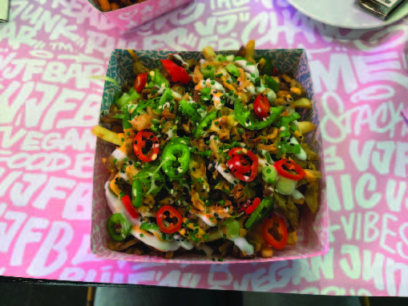
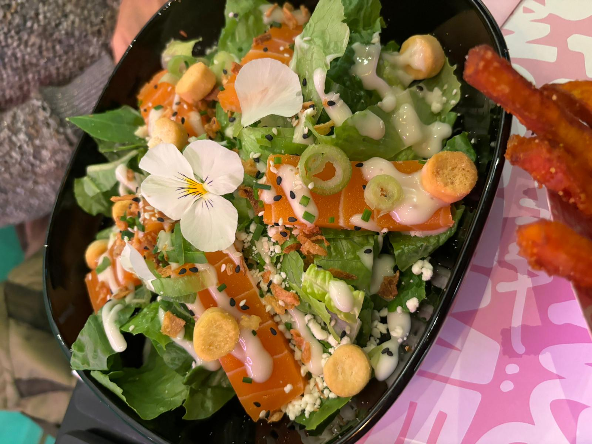
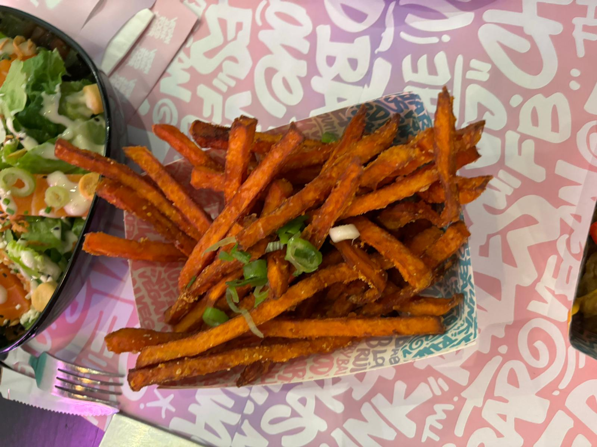

Reviews
Ik ben met vrienden en familie naar de Vegan JunkFood Bar geweest en ze hebben een op de vijf sterren gegeven over hun ervaring bij de VJFB. hier onder valt de sfeer, het eten, de service en de prijzen.
Wil je zelf het menu zien? scan de QR code!


mijn Review
Ik ging in de middag lunchen en had een kapsalon besteld, die was erg lekker en zag er zeer mooi uit.
Het kwam ook in een papieren bakje wat uiteindelijk voor het millieu beter is dan een herbruibaar bakje, hierdoor zijn ze op meer manieren duurzaam wat ik erg waardeer.
Ik zou het erg aanraden en ik kom hier zeker wel eens terug!

Ingrid's Review
Ik had een ceasar zalm salade besteld, hij zag erg mooi uit en was ook erg lekker.
Het is niet een zware maaltijd, dus erg fijn als je niet al te veel honger hebt. ze zalm had een erge goeie structuur, dus als je als veganist zaml mist zou ik deze salade zeker uitproberen.
Donna's Review
Ik ben zelf veganist en vond het eten heerlijk! Ik zou willen dat ik alles in een keer kon uitproberne! Ze hebben hier ook veel keuze uit bier wat ik ook erg leuk vond.
Kelly's Review
Erg lekker eten. Hadden heerlijke zoete aardappel frietjes! Ik vond de drankjes wel wat aan de dure kant. Ik ben zelf geen vegatariër of veganist en zou hier zelf denk niet zo snel koen maar met vrienden die vegatariër of veganist zijn zeker wel!
Foto's van het eten


